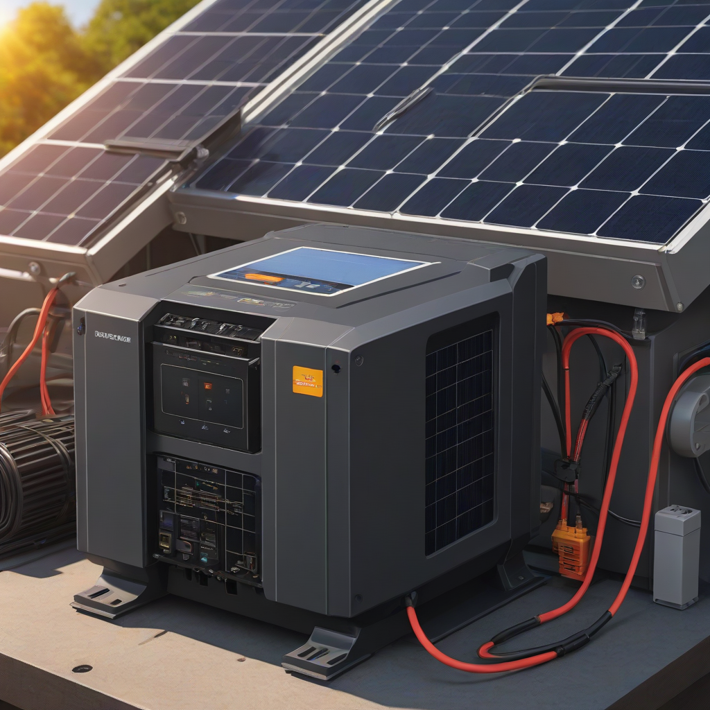
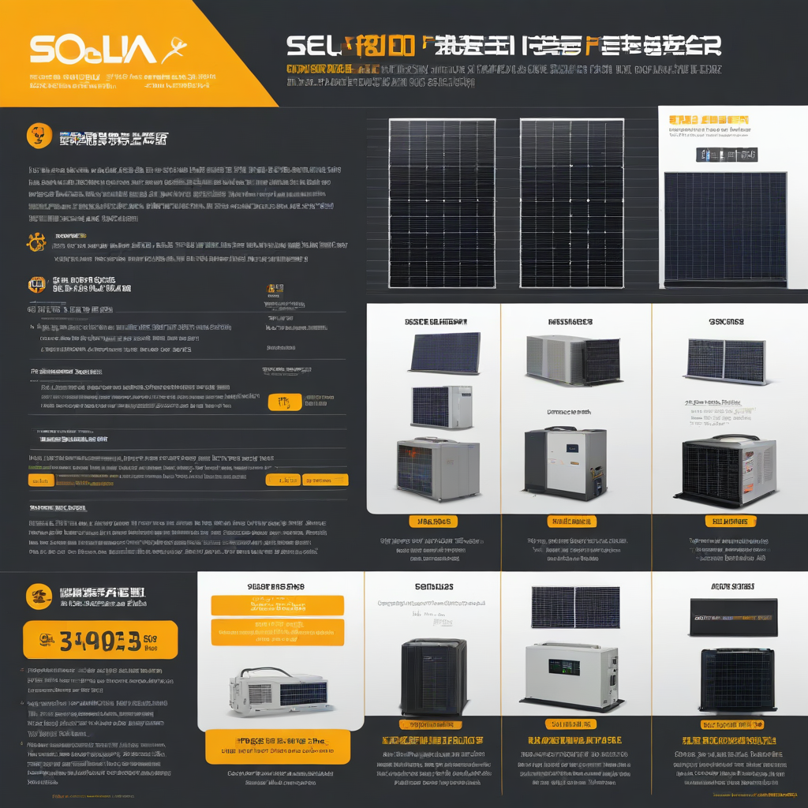

Learn everything about how to choose solar inverter in 2026. Costs, comparisons, expert tips, and buyer's advice for US homeowners.
Updated 2026-05-27. Informational only. Consult a licensed solar installer for your specific project.
How to choose solar inverter in 2026 means matching inverter type (string, microinverter, or power optimizer) to your roof layout, shading, budget, and storage goals. Prioritize reliability, warranty length (10–25 years), compatibility with your panels and battery (if adding storage), and certification (UL 1741 SA, IEEE 1547). For most US homes, microinverters or power optimizers offer superior safety and production in shaded conditions, while string inverters remain cost-effective for simple, south-facing roofs.
Choosing the right solar inverter is one of the most consequential decisions you’ll make when installing a home solar system—and it’s often overlooked. While panels grab headlines, the inverter is the brain of your setup: it converts DC solar energy into usable AC power, manages grid communication, enables monitoring, and (if paired with a battery) controls energy storage. A mismatched or undersized inverter can slash your system’s output, increase failure risk, and void warranties. In 2026, with evolving safety standards, rising battery integration, and new grid interconnection rules, selecting wisely means maximizing savings, reliability, and future-proofing.
Consider this: A recent EnergySage analysis found that 42% of underperforming residential solar systems traced root issues to inverter mismatch, not panel quality. Meanwhile, the Department of Energy (DOE) reports that inverters with advanced grid-support features—like Volt-VAR optimization and rapid shutdown compliance—are now standard in new installations. Whether you’re adding panels to an existing system or going off-grid with a Tesla Powerwall, your inverter choice dictates how much of your sun-generated electricity actually powers your home.
This guide cuts through the confusion. We’ll walk you through real-world 2026 data, highlight pitfalls to avoid, and give you a step-by-step framework to match the right inverter to your home. Let’s get your system humming at full capacity.
Why How to Choose Solar Inverter Matters

Importance
The inverter determines your system’s efficiency ceiling, safety profile, and longevity. In 2026, UL 1741 SA compliance (which enables grid-forming capabilities and anti-islanding) is mandatory for new grid-tied installations in most states. Non-compliant inverters risk utility rejection or costly retrofits. Moreover:
Production yield: A 98% efficient inverter on a 10 kW system generates ~200 more kWh/year than a 95% unit—worth $25–$35 annually at average US electricity rates.
Safety: Rapid shutdown (per NEC 2017/2023) is non-negotiable. Microinverters and optimizers shut down panels within seconds of grid loss; string inverters require add-on DC optimizers to meet code.
Warranty & longevity: Inverters with 10–25 year warranties dominate the 2026 market. Avoid brands with under 10 years—they often signal compromised build quality.
Common Mistakes
Homeowners frequently make these costly errors:
Over-sizing the inverter: Putting a 12 kW inverter on a 10 kW array wastes money and reduces efficiency (inverters operate best at 70–90% of rated capacity).
Ignoring shading: Installing a string inverter on a roof with partial tree or chimney shade can slash production by 20–40%. Microinverters or optimizers mitigate this.
Battery future-proofing: Choosing a non-battery-ready inverter locks you out of adding storage later—critical as batteries drop in price. Tesla Powerwall costs $11,500–$15,500 installed in 2026; Enphase IQ Battery runs $4,000–$8,000.
What to Expect
By 2026, you should expect:
Smart grid features: Inverters that support utility-controlled demand response (like demand response events from your utility) and automatic voltage regulation.
Longer warranties:

Leading brands (Enphase, SolarEdge, Tesla) now offer 12.5–25 years on inverters.
Seamless monitoring: Real-time production, fault alerts, and cloud-based diagnostics via mobile apps.
Step-by-Step Guide to Choosing a Solar Inverter
Tools Needed
You won’t need physical tools to *select* an inverter—but you’ll need these resources:
Solar site assessment report (from your installer or DIY tools like Aurora Solar)
Panel specifications (nameplate power, voltage, current, IV curve data)
Roof layout map (showing orientation, tilt, and shading patterns)
Comparison shopping and technical vetting takes 2–5 hours for most homeowners—less if you work with a solar consultant who uses design software.
Safety Precautions
While selecting an inverter is a pre-installation step, safety starts here:
Verify certifications: Ensure the inverter has UL 1741 SA, IEEE 1547-2018, and CEC approval (if in California).
Confirm rapid shutdown compliance: All inverters must shut DC voltage to 30V within 30 seconds of grid loss (NEC 690.12).
Check IP rating: For outdoor string inverters, IP65 minimum (dust/water resistance).
Cost Considerations
Budget Planning
In 2026, inverter costs range from $0.10–$0.30 per watt installed. For a typical 8 kW system:
String inverter: $800–$1,600 (e.g., SMA Sunny Boy, Huawei SUN2000)
Microinverters: $1,600–$3,200 (e.g., Enphase IQ8)
Hybrid/power optimizer: $2,000–$4,000 (e.g., SolarEdge with battery-ready inverter)
Remember: 30% federal ITC tax credit applies to inverter costs if installed with solar panels by end-2026.
Where to Save
Don’t overspend on features you won’t use:
On simple, unshaded roofs: A high-quality string inverter (e.g., SolarEdge HD-Wave) beats a premium microinverter on ROI.
Avoid “overkill” grid-forming capability unless your utility mandates it (still rare for homes in 2026).
Where to Invest
Spending extra here pays dividends:
Warranty length: Extra years on coverage (e.g., Enphase’s 25-year warranty) reduce long-term risk.
Battery integration: Hybrid inverters (e.g., Tesla Power Inverter, SolarEdge STP) save $1,000+ vs. adding a separate battery inverter later.
Communication features: Support for cellular + Wi-Fi dual-path monitoring ensures uptime during outages.
2026 Inverter Comparison Table
Type
Top Brands (2026)
Efficiency
Warranty
Battery-Ready?
Avg. Cost (8 kW)
String (Hybrid)
SolarEdge, Huawei, Fronius
97.5–98.5%
12.5 years
Yes (with add-on module)
$1,800–$3,000
Microinverters
Enphase IQ8, APSystems
96–97.5%
25 years
Yes (IQ8R + battery)
$2,400–$3,600
String + Optimizers
SolarEdge (standard), Tigo
98–99%
25 years (optimizer), 12.5 (inverter)
Yes
$2,000–$3,200
Data sources: EnergySage 2026 Solar Pricing Report, NREL PV Cost Benchmarks, manufacturer websites
Frequently Asked Questions
Can I mix old and new inverters when expanding my system?
No—especially not across technologies. Mixing string and microinverters, or different generations (e.g., Enphase IQ7 vs. IQ8), causes communication errors and voids warranties. Always consult your installer for compatibility. If upgrading, replace the entire inverter bank.
Do I need a battery-ready inverter if I don’t plan to add storage?
Not immediately—but it’s wise. Battery-ready inverters cost only ~$200–$400 more upfront and retain resale value. Given how fast battery prices fall (down 60% since 2020), adding storage within 3–5 years is highly probable. NREL’s 2026 modeling shows solar + storage payback in under 8 years for most US regions.
What’s the difference between “grid-forming” and “grid-following” inverters?
Grid-following (most standard inverters) sync with the grid’s voltage/frequency but shut down during outages. Grid-forming inverters (emerging in 2026) can stabilize the grid and support backup power during outages—critical for islanding with batteries. While not yet required for homes, utilities like Hawaiian Electric and PG&E are piloting mandates. If you live in a fire-prone or high-outage area (e.g., California, Texas), prioritize grid-forming-capable units like the Tesla Power Inverter.
How do I size the inverter for my solar array?
Follow the 1.1:1 inverter-to-panel ratio rule for optimal efficiency. For example: a 9 kW array (9,000W) needs an inverter rated for ≤9,000W AC output. Never exceed the inverter’s DC input voltage/current limits (check your panel’s Vmp/Isc and the inverter’s max PV input). When in doubt, use the DOE’s inverter sizing calculator.
Why does my inverter hum or click?
Some noise is normal—especially during startup/shutdown. But persistent humming, buzzing, or rapid clicking indicates issues:
Loose wiring: Check DC/AC connections (turn off PV and grid first!).
Overheating: Ensure ventilation clearance (3+ inches on all sides).
Failing fan: Common in older string inverters. Replace if fan noise is irregular.
Grid instability: Frequent shutdowns due to voltage/frequency swings may require a utility协调 review.
Conclusion
Summary
In 2026, choosing the right solar inverter means balancing four priorities: roof geometry (shading/complexity), budget (upfront vs. long-term), storage plans (battery compatibility), and local grid rules. String inverters win for simple, unshaded roofs; microinverters or optimizers dominate for complex roofs or maximize production. Always verify UL 1741 SA certification and rapid shutdown compliance—and never sacrifice warranty length for a lower sticker price.
Next Steps
Get a site assessment: Use tools like Aurora Solar to model shading and inverter options.
Compare 3+ quotes: Ask installers: “Is your inverter UL 1741 SA certified?” and “Does it support grid-forming?”
Check utility requirements: Search your utility’s “interconnection standards” for 2026 updates.
Claim the ITC: Ensure your installer includes inverter costs in the 30% tax credit claim.
Writer and researcher specializing in residential solar energy systems, costs, and installation guides for US homeowners.
All data verified against 2026 industry sources.
✓ Data verified 2026✓ Updated: 2026-05-27✓ Editorial transparency